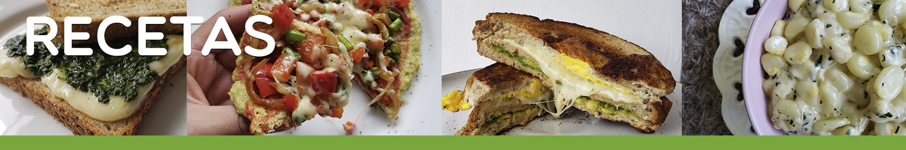
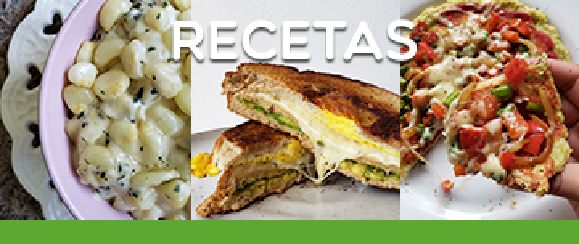

<div *ngIf="init$ | async as init">
    <div class="title-div">
        
        
        <div class="title-div__image">
            <button mat-icon-button class="w3-hide-medium w3-hide-large" (click)="retun()">
                <mat-icon>keyboard_backspace</mat-icon>
            </button>
            <button mat-mini-fab color='primary' class="w3-hide-small w3-margin-top w3-margin-left" (click)="retun()">
                <mat-icon>keyboard_backspace</mat-icon>
            </button>
        </div>

    </div>
    
    <div class="w3-margin-left w3-margin-right" >
        <div class="w3-row">
            <div class="w3-col s0 m1 l1">
                <p class="w3-hide-small"></p>
            </div>
            <div class="w3-col s12 m10 l10">
                <div style="padding-left: 20px; margin-top: -28px;" *ngIf="auth.user$ | async as user">
                    <button mat-fab color='accent' *ngIf="!!user.confi" (click)="onCreateEditRecipe(false, null)">
                        <mat-icon>add</mat-icon>
                    </button>
                </div>
                <div class="w3-margin-top">
                    <mat-expansion-panel *ngFor="let recipe of init.recipes" class="w3-margin-bottom">
                        <mat-expansion-panel-header>
                            <mat-panel-title>
                                {{recipe.name}}
                            </mat-panel-title>
                            <mat-panel-description style="justify-content: flex-end;" *ngIf="auth.user$ | async as user">
                                <button mat-icon-button *ngIf="!!user.confi" (click)="onCreateEditRecipe(true, recipe)">
                                    <mat-icon>edit</mat-icon>
                                </button>
            
                            </mat-panel-description>
                        </mat-expansion-panel-header>
                        <div>Descripción</div>
                        <p class="recipe__descrip">
                            {{recipe.description}}
                        </p>
                        <div class="ms-flex">
                            <div class="recipe__list">
                                <div>Ingredientes</div>
                                <ul class="recipe__descrip">
                                    <li *ngFor="let item of recipe.inputs">{{item}}</li>
                                </ul>
                            </div>
                            <div>
                                <iframe class="recipe__video" 
                                    [src]="sanitizer.bypassSecurityTrustResourceUrl(recipe.videoURL)" frameborder="0" 
                                    allow="accelerometer; autoplay; encrypted-media; gyroscope; picture-in-picture" allowfullscreen>
                                </iframe>
                            </div>
                        </div>
            
                    </mat-expansion-panel>
                </div>
            </div>
            <div class="w3-col s0 m1 l1">
                <p></p>
            </div>
        </div>
    </div>
</div>